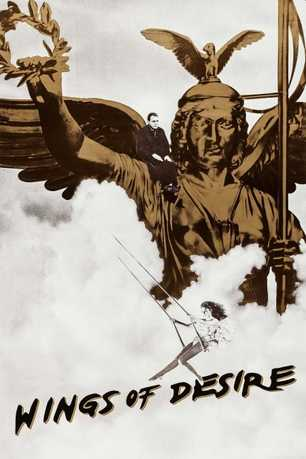
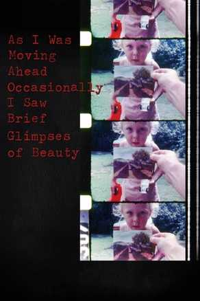

Travis DeShong's Favorite 4 Movies
These films rank amongst the best I've ever seen.
Yi Yi
A film where each member of a Taipei family grapples with the meaning of life.
Wings of Desire

A film where two angels float around Berlin and observe human life in the physical world.
Pastoral: To Die in the Country
A film where we see a surreal, recreated memory of a theater director's coming of age.
As I Was Moving Ahead Occasionally I Saw Brief Glimpses of Beauty

A film where a man muses about life accompanied by 30 years of private home movie footage.